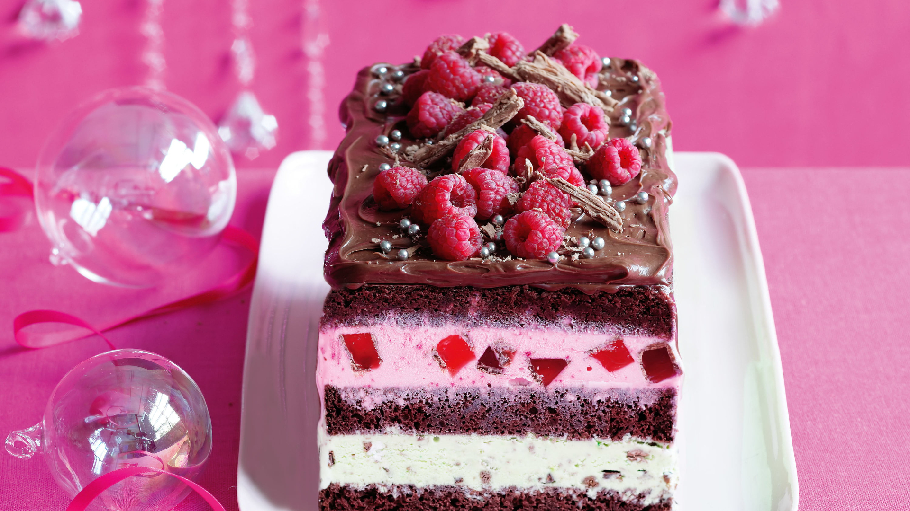

Pastel
Aunque la noción de pastel tiene varios usos, su utilización más frecuente se encuentra vinculada a la cocina. Un pastel es un tipo de masa que suele formarse con agua, manteca (también llamada mantequilla) y harina y que puede rellenarse con alimentos dulces o salados. El pastel debe cocinarse en el horno para que la masa (y, en ocasiones, el relleno) no esté cruda.
En ocasiones, el término pastel se emplea como sinónimo de tarta o de torta. Cabe destacar que, de acuerdo a diversas características específicas de cada preparación, el pastel también puede recibir otros nombres.
Cuando se trata de un pastel de tamaño reducido, puede nombrarse como pastelito o pastelillo: “En mi país, festejamos el Día de la Independencia con pastelitos de membrillo”, “Los pastelillos de banana estaban sencillamente irresistibles”.
Si la masa de pastel se asemeja a la del pan y el relleno es salado, la preparación recibe el nombre de empanada. Podría decirse, por lo tanto, que las empanadas son pasteles individuales que pueden rellenarse con soja texturizada, tomate, cebolla, apio, champiñones, setas y otros ingredientes.
Las mezclas difieren mucho en las proporciones de los ingredientes. Cuanto mayor sea el contenido de grasa, más "pesada" se considera la masa y la masa resultante. Si la proporción de almidón de trigo es alta en comparación con la cantidad de harina (50% a 75% de la cantidad total de harina y almidón), la miga será de poros finos, esponjosa, tierna y algo seca, como se desea para bizcochos. Si, por el contrario, se reduce el contenido de almidón o se utiliza únicamente harina, como suele ser el caso de las tortas de mármol, la miga se vuelve de poros gruesos y firme. En lugar de fécula de trigo también puedes utilizar otros tipos como fécula de patata o de maíz. La harina integral también es muy adecuada para las mezclas de rebozado, ya que le da a la masa una textura más sustanciosa
